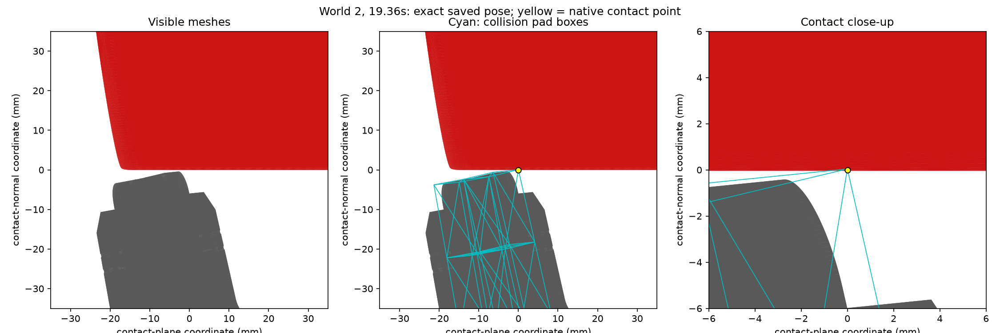
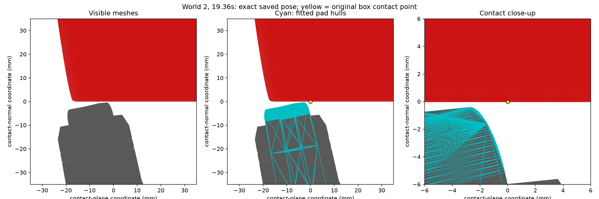
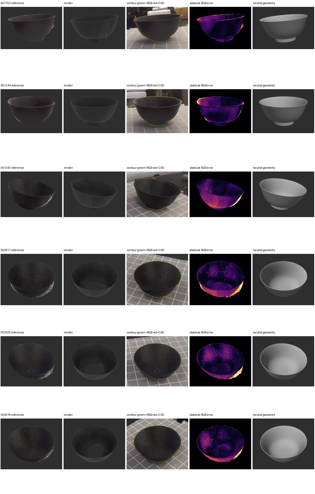
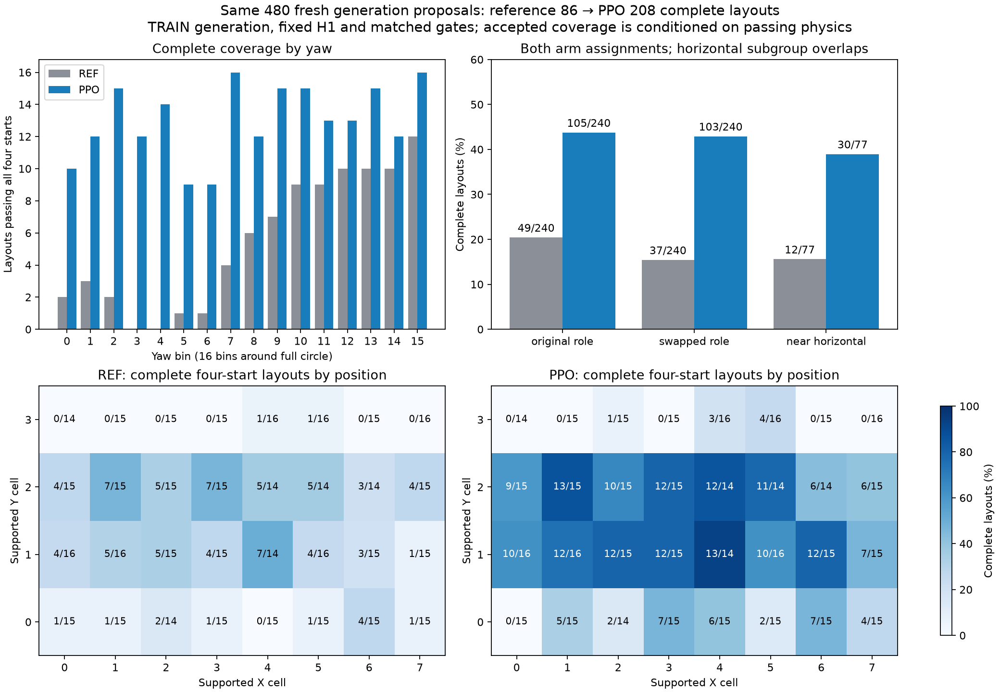

Real-to-Sim-to-Real Learning for Bimanual Manipulation
Overview and demonstration
This project turns captures of real objects into simulated manipulation tasks, then uses those tasks to train visual policies. The workflow has five stages:
- Real capture. Calibrated RGB and depth views of objects, plus real demonstrations.
- Simulation. Reconstructed assets and a calibrated bimanual scene in GPU contact simulation.
- Teacher policy. Reinforcement learning on privileged simulator state, producing contact-rich motions.
- Rendered experience. Verified simulated motions rendered from multiple views under varied lighting.
- Visual policy. π0.5 fine-tuned on the rendered experience.
My contributions
- Cup-policy development. Task curriculum, reward and contact engineering, and integration of the learned stages with an engineered controller.
- Demonstration and contact guidance. Using a contact reference derived from a demonstration to guide where and how the policy engages the cup.
- Simulator contact diagnostics. Separating collider geometry errors from numerical collision errors, then evaluating a fix for each.
- Reusable object reconstruction pipeline. Capture preparation, metric editable geometry, photographic texture fitting, Blender evaluation, held-out quality gates, and portable asset bundles.
The simulation station and renderer are shared team infrastructure. The residual-PPO and π0.5 results below are broader team work, and are labeled that way.
Learning the cup manipulation sequence
The task is to flip a cup with two arms and leave it standing on the table. A flip counts as successful only if the cup is upright, supported by the table, released and settled, and still valid at the end of the episode. This is a staged controller, not one end-to-end neural policy:
- First-tip PPO. A learned actor makes the first tip. It was trained with PPO plus imitation.
- Physical hand repositioning. An explicit controller moves the hands into position for the second stage. It runs in the physics simulation, so nothing is teleported at the handoff.
- Finishing PPO. A second learned actor completes the flip. It was trained with ordinary PPO, without imitation.
Each actor reads 243 privileged state and contact-reference features, and outputs 12 relative Cartesian commands (translation and rotation for each hand) every 40 ms over a 1 ms physics step. The finisher is rewarded for qualified completion, new orientation progress, contact acquisition, approach, and bounded demonstration-contact progress. Its costs cover robot–cup force above 5 N, forbidden collisions, sustained robot–table load, abrupt action changes, and failures.
19/32 retained full flips in a nominal development evaluation with a 36-second deadline. The 32 starts were frozen development starts, not training data. This used the historical simulator, before the later contact corrections, and the completion hold is a controller intervention.
Diagnosing contact physics
Unexpected contact during cup rollouts could have come from geometry, rendering, timing, or collision arithmetic, so I tested those explanations separately instead of tuning around them in the reward. Two distinct issues came out of that work, and each fix was evaluated on its own.
Geometry discrepancy
The gripper's box colliders did not match its visible meshes. Their corners extended about 2.5 mm beyond the visible pads, so the simulator could report contact where no visible surface touched the cup.


The fitted replacement achieved at most 0.053 mm sampled outer-surface mismatch, measured over 918 samples per pad. This is not a certified surface-error bound, and no full-policy success gain has been established.
Numerical collision issue
Separately, a minimal cup and table reproduction isolated numerical errors in GPU GJK simplex projection: overlapping shapes could produce no contact. I evaluated an opt-in, higher-precision correction using matched physical replays.
Missing-contact events fell from 247/3,000 to 0/3,000 steps across three selected one-second diagnostic windows. This is a bounded diagnostic from a small development cohort. It is not proof of general solver correctness or of improved policy reliability.
Reconstructing objects for simulation
The reconstruction pipeline converts calibrated captures into editable, metric geometry with textures fitted from training photographs. Assets are rendered in Blender and scored on views withheld from generation, so simulated tasks can start from assets with recorded quality checks.

The refined bottle reached silhouette IoU 0.9536 and depth-consistency MAE 1.6758 mm on nine historical test views. The result required directed refinement, because the initial fresh generation did not pass. Depth was compared against estimated sensor depth, so this agreement is not independent physical dimensional accuracy.
The bowl is a second example, run with default prompts and no object-specific intervention. Its status remains needs review: the held-out test views pass the quality gates, but validation views fail them, and the evidence points to an input alignment problem in the capture.

Team pipeline and results
This section is broader team work, not my individual result. The team uses a residual-PPO teacher to generate simulated motions, verifies them, renders them from multiple views, and fine-tunes π0.5 on the result. The teacher configuration reported here is called H1.

- Layout yield: 208 versus 86 complete layouts from 480 proposals, approximately 2.4× the usable layouts of a demonstration-derived reference controller.
- Fresh confirmation: 89/256 versus 43/256 full paths, in a separate simulation confirmation.
- H1 student: 20,000 updates on 832 physical trajectories and 1,664 lighting episodes. Training completed in the November 5 repository snapshot; student task evaluation was still pending.
Both comparisons are against that reference controller, not from-scratch PPO, and both are in simulation. They do not show that H1 beats from-scratch PPO or improves hardware performance.
Earlier π0.5 box policies, which are not H1, produced selected real-robot successes that were reviewed visually. Those examples are not an aggregate hardware success rate.
Limitations and ongoing work
- Cup policy. Simulation only, with no sim-to-real transfer. The 19/32 result has not been re-measured under the corrected contact physics. Reviewed failures include a finishing actor missing the cup, a sideways roll, and a repositioning abort.
- Contact physics. The corrections are opt-in and backed by bounded diagnostics, with no measured gain in policy success.
- Reconstruction. Unobserved surfaces are inferred and textures retain capture lighting. Neither example shows unattended, high-quality results on every new object.
- Ongoing. H1 student task evaluation is pending, and further reconstruction candidates have not yet been validated.